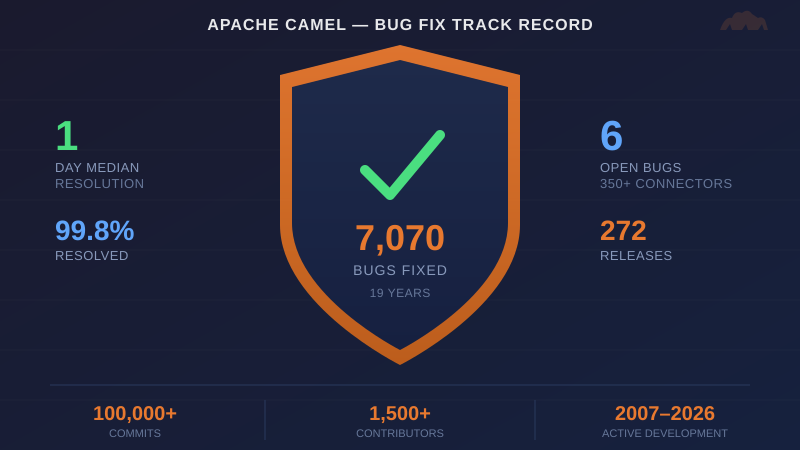

Apache Camel has fixed 7,070 out of 7,081 reported bugs — a 99.8% resolution rate — with a median fix time of 1 day. That track record spans 19 years, 350+ connectors, and 272 production releases. This is not a recent improvement — the project has maintained a 1-day median resolution for 17 of the last 19 years. Here is the data.
We pulled the numbers from JIRA, GitHub, and Maven Central to see what 19 years of Apache Camel bug data actually looks like.
19 years of bug fixes
Since the project’s first release in 2007, the Apache Camel community has resolved 7,070 bugs. Here is the full history — every single year:
| Year | Bugs Reported | Bugs Fixed | Avg Resolution | Median Resolution | Fixed Same/Next Day | Within 7 Days |
|---|---|---|---|---|---|---|
| 2007 | 69 | 52 | 5.1 days | 1 day | 58% | 79% |
| 2008 | 320 | 318 | 13.0 days | 1 day | 57% | 80% |
| 2009 | 382 | 384 | 13.4 days | 1 day | 61% | 80% |
| 2010 | 337 | 345 | 12.7 days | 1 day | 69% | 85% |
| 2011 | 359 | 360 | 11.6 days | 1 day | 63% | 81% |
| 2012 | 388 | 361 | 14.1 days | 1 day | 52% | 76% |
| 2013 | 453 | 449 | 23.1 days | 2 days | 50% | 72% |
| 2014 | 440 | 417 | 21.5 days | 1 day | 55% | 77% |
| 2015 | 466 | 464 | 38.3 days | 1 day | 53% | 73% |
| 2016 | 417 | 420 | 46.8 days | 1 day | 55% | 74% |
| 2017 | 435 | 453 | 52.4 days | 1 day | 59% | 75% |
| 2018 | 330 | 327 | 26.3 days | 1 day | 51% | 74% |
| 2019 | 367 | 365 | 53.6 days | 2 days | 47% | 73% |
| 2020 | 446 | 459 | 56.0 days | 1 day | 54% | 76% |
| 2021 | 377 | 395 | 52.5 days | 1 day | 52% | 73% |
| 2022 | 329 | 321 | 17.7 days | 1 day | 52% | 77% |
| 2023 | 308 | 313 | 34.3 days | 2 days | 49% | 75% |
| 2024 | 383 | 391 | 27.6 days | 1 day | 55% | 80% |
| 2025 | 313 | 315 | 10.7 days | 1 day | 57% | 79% |
| 2026* | 162 | 161 | — | 1 day | — | — |
| Total | 7,081 | 7,070 | 1 day | ~54% | ~77% |
2026 is partial (through June 13)
What this table shows is remarkable consistency. The median resolution time has been 1 day for 17 out of 19 years. The only exceptions were 2013 and 2019 where it was 2 days. That’s not a recent improvement — it’s how this community has always operated.
The backlog has never grown
Look at the Reported vs Fixed columns above. In every single year, the community resolved approximately as many bugs as were reported — often more. The net balance across 19 years:
- 7,081 reported
- 7,070 resolved
- 6 open today
That’s a 99.8% resolution rate sustained over nearly two decades.
How the open bug count has changed over time
To see how the community manages its backlog, here is the number of open (unresolved) bugs at the end of each year, and the peak open count during that year:
| Year | Open at Year End | Peak During Year |
|---|---|---|
| 2007 | 17 | 17 |
| 2008 | 19 | 19 |
| 2009 | 17 | 25 |
| 2010 | 9 | 17 |
| 2011 | 8 | 15 |
| 2012 | 35 | 35 |
| 2013 | 39 | 51 |
| 2014 | 62 | 70 |
| 2015 | 64 | 74 |
| 2016 | 61 | 66 |
| 2017 | 43 | 56 |
| 2018 | 46 | 46 |
| 2019 | 48 | 77 |
| 2020 | 35 | 72 |
| 2021 | 17 | 40 |
| 2022 | 25 | 33 |
| 2023 | 20 | 35 |
| 2024 | 12 | 27 |
| 2025 | 10 | 18 |
| 2026* | 10 | 19 |
The history breaks into three phases:
2007–2011: Tight control. The project was smaller, and open bugs never exceeded 25.
2012–2020: Growth pressure. As Camel grew through the 2.x era and into the 3.x migration, the backlog climbed. The all-time peak was 77 open bugs in May 2019 — coinciding with the Camel 3.x transition. Even at its worst, 77 open bugs across hundreds of connectors is a number most projects would envy.
2021–2026: Clean sweep. December 2020 was the turning point — the community resolved 59 bugs in a single month, cutting the backlog in half. Since then, the open count has stayed below 25 and is now at 10 — the lowest in the project’s entire history. Lower than the early days when Camel had a fraction of today’s 350+ connectors.
272 releases on Maven Central
Bug fixes only matter if they reach users quickly. The Camel community has published 272 GA releases to Maven Central since 2007:
| Year | Releases | Year | Releases |
|---|---|---|---|
| 2007 | 3 | 2017 | 14 |
| 2008 | 3 | 2018 | 12 |
| 2009 | 5 | 2019 | 14 |
| 2010 | 6 | 2020 | 17 |
| 2011 | 11 | 2021 | 21 |
| 2012 | 13 | 2022 | 19 |
| 2013 | 13 | 2023 | 28 |
| 2014 | 11 | 2024 | 20 |
| 2015 | 12 | 2025 | 26 |
| 2016 | 12 | 2026* | 12 |
The release cadence has increased over time — from roughly one release per month in the early years to two or more per month since 2020. When a bug is fixed, you don’t wait long for a release that includes the fix.
Commit and contributor history
The Apache Camel project has grown from a small team to one of the largest integration open-source communities:
| Year | Commits | Contributors | Year | Commits | Contributors |
|---|---|---|---|---|---|
| 2007 | 1,177 | 7 | 2017 | 5,337 | 213 |
| 2008 | 2,122 | 12 | 2018 | 4,607 | 191 |
| 2009 | 3,313 | 14 | 2019 | 7,887 | 226 |
| 2010 | 2,554 | 18 | 2020 | 8,882 | 269 |
| 2011 | 3,230 | 26 | 2021 | 6,973 | 236 |
| 2012 | 3,983 | 24 | 2022 | 7,142 | 224 |
| 2013 | 4,235 | 50 | 2023 | 8,208 | 221 |
| 2014 | 4,099 | 99 | 2024 | 6,563 | 165 |
| 2015 | 4,995 | 144 | 2025 | 5,282 | 153 |
| 2016 | 5,596 | 199 | 2026* | 3,226 | 92 |
Over 100,000 commits from more than 1,500 contributors across the project’s lifetime. The peak year was 2020 with 8,882 commits from 269 contributors.
The contributor count in the table above is based on unique git committer emails per year. The project started in Subversion where community patches were committed by a committer with a “thanks to X for the patch” credit in the commit message — so the early years undercount the actual community involvement.
The recent trend: getting faster
Zooming in on the last three years, the trend is clear — resolution times are dropping:
| Year | Avg Resolution | Fixed Same/Next Day |
|---|---|---|
| 2023 | 34.3 days | 49% |
| 2024 | 27.6 days | 55% |
| 2025 | 10.7 days | 57% |
The average resolution time fell 3x between 2023 and 2025. The same-day fix rate rose from 49% to 57%. The community is faster than ever.
More connectors, same bug rate
Between Q3 2025 and Q1 2026, the community added over 50 new connectors — AI connectors, MCP support, document processing, and more. The project’s surface area grew by approximately 15%.
The incoming bug rate? Unchanged at ~25-30 per month.
New features shipped without destabilizing existing ones. The project’s modular architecture and testing discipline hold up even during periods of rapid growth.
What the 6 remaining open bugs look like
The current open bugs are all relatively recent — the oldest is from April 2025. There are no ancient, multi-year-old issues gathering dust. The community actively triages, resolves, or closes bugs rather than letting them accumulate.
What this means for users
If you’re evaluating Apache Camel for your integration needs, the data tells a clear story:
- Bugs get fixed fast. Median 1-day resolution — not just recently, but for 17 of the last 19 years.
- The project doesn’t accumulate debt. 7,081 reported, 7,070 resolved, 6 open. That’s a 99.8% resolution rate.
- Releases ship constantly. 272 releases across 19 years, averaging 2+ per month in recent years.
- Growth doesn’t break things. 50+ new connectors added in 6 months without increasing the bug rate.
- The community is large and sustained. 100,000+ commits from 1,500+ contributors over 19 years.
This track record is the result of a global community of contributors, committers, and users who care about quality. Whether you’re running Camel in production today or considering it for a new project, the data shows a community that has shown up — every single day — for 19 years.
The data is public
All numbers in this post are fully verifiable:
- Apache Camel JIRA — bug reports and resolution dates
- GitHub repository — commits and contributors
- Maven Central — release history
If your organization uses Apache Camel and would like to be listed on our user stories page, we’d love to hear from you — reach out on the mailing list or on Zulip chat.